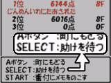

作者：赤色彗星
编辑：kenyo
一．标题画面菜单
进入游戏后，首先要做成日记――“日记をつくる”，起名后回到标题画面。出现下面的菜单：（有些选项后期才会出现，我先一并列出,注意这次游戏只能作成一个日记，不像前作有三个，想是为了对应联机系统的需要。）
冒を出る つづきから――――继续上次冒险
风来おぅぎ――――风来奥义
リセット――――reset，从村中开始继续，道具和金钱会全部消失
回想――――回想中断前的行动。
アイテムこうかん――――通讯交换道具，（仓库中的道具）
アイテムをわたす――――给道具
アイテムをもらう――――得到道具
日记を消す――――消除进度
名前を变える――――改名
风来人番付――――挑战各个迷宫成绩排名
风来おぅぎ――――风来奥义
冒险のりれき――――冒险的履历，
风来人かく付け――――风来人的定级以及达成的各种称号
もののけてちょう――――怪物手帐
风来奥义：其实就是介绍游戏中的一些基本技巧，只是叫了些非常夸张的名字罢了。
1． ナナメせんかいきゃく（斜向旋回脚）：斜向移动技巧。
2． とうそう道路はだん（逃走道路刃断）：面对多个敌人时，尽量退到通道中，守住要道，这样每次就只会面对一个敌人。
3． どく草たいきゃくけん（毒草大脚剑）：将毒草投向敌人，使敌人的速度减半，这样可以边打边退。
4． ばいそくこうたいは（倍速后退刃）：吃下速度的种子（すばやさのたね），与敌人边打边退。
5． とびつき三かくとび（飞突三格飞）：利用飞突之杖（とびつきの杖）来逃避敌人的包围。飞突之杖使用时只要前方无障碍就可以一直向前飞。
6． しばりせんかいきゃく（绑缚旋回脚）：利用绑缚的杖（かなしばりの杖）定住敌人后，通过移动来回复HP。
7． うきしまとうたつは（浮岛到达刃）：如果有敌人在浮岛上，就可利用地点变换之杖（ばしょかえの杖）与敌人交换位置，如果浮岛上没有敌人，可以利用吹飞之杖（ふきとばしの杖）将敌人吹到浮岛上，然后再利用地点变换杖与敌人交换位置，注意吹飞之杖的距离是十格。
8． ギタンれっぷうざん（金钱烈风斩），将金钱投向敌人可以给敌人造成巨大伤害，伤害值是金钱数的十分之一。按住B键移动到金钱上，选择投掷就行了，另外还可以将金钱放到保存的壶（ほぞんの壶）中，以后能随时投掷出去。
9． こんざつ部屋きほんほう（拥挤房间基本方）:如果不幸闯入怪物房间，一定要尽快退到通道中。
10． こんざつ部屋いっそうけん（拥挤房间逸走剑）：怪物房间内随人满地都是道具，但也到处是看不见的陷阱，其实只要攻击一下前方，就可以令隐藏的陷阱出现。
二．迷宫中的菜单
在迷宫中，按B键出现菜单如下：
1.どうぐ――――道具，按START键能够整理
たべる のむ よむ ふる うつ――――都可视为“使用”，根据物品的不同而说法不同。注意壶还有“いれる”“みる”选项，分别是“放入”和“看”的意思。
なげる――――投掷。
おく――――放置在脚下。
せつめい――――道具说明。
2.あしもと――――检查脚下。
3.マップ――――MAP，查看地图。
4.ヒント――――提示。
そうさ――――操作，解释游戏中的基本操作方法。
テクニック――――基本技巧解说。
おうぎ――――奥义，同标题画面的奥义选项，但在迷宫中行动时不会出现演示画面，而只会用文字来表示。
じょうたい――――状态，确认当前的状态，如中毒，发怒等等。
5.おゎる――――结束，游戏中断。
ばしょ：现在所处地点
けん: 剑的攻击力
たて：盾的防御力
ちから：力量/最大力量（力量越大攻击力越高）
まんぶくど：满腹度/最大满腹度。（吃饭团能回复，吃药草和肉也能回复少许，满腹度降为零后，HP开始减少）
おかね：金钱
三．迷宫操作篇
1． A键是攻击
2． 按一下B键是叫出菜单
3． 按住B键再按A键是快速回复HP，但满腹度下降速度变快。
4． 按住B键移动是快速移动，而且能够移动到道具上而不会自动捡起。
5． 按START一下后能选择方向。
6． 按住START不动，移动方式就变成只能斜向移动。
7． 按SELECT一下是查看地图。
8． 按住SELECT不动，再按A键是射弓箭，但必须先装备。
9． 当变身为怪物后，A是普通攻击，SELECT+A是特技。注意，变身后不能使用道具也不能捡道具，但不惧怕任何陷阱，按B键叫出菜单，“とうぎ”是使用特技，“もどる”是变回人性。
四．伊尔帕村场所篇
①，仓库
あずける：存道具（按SELECT键能同时选中多个道具，这个技巧在道具店也能用到。）
出る：取道具
ゴミすて：将道具扔掉
やめる：终止
除了可以在保管员那里存道具外，还可自行将道具存放在右边的木地板区域内，须注意两点，一是存放时壶中得道具会消失，二是如果将道具放置在木板区域以外也会消失。
②．宿屋/料理屋（彤坊トンファン）
这里是村人休息的场所，西林在迷宫中被打倒后就会回到这里。
③．万屋：这里有三个对冒险有帮助的店
1． 道具屋：这里能买到一些比较基本的道具。
かう：买
ぅる：卖
やめる：终止
2． 冶炼屋：这里能强化武器，修理腕轮等等。
きたえる：强化武器，每次加一点，不过有时候是三点，每强化一次须进出一次迷宫才能回来再次强化。
しゅうり：修理损坏的腕轮，当腕轮出现[ヒビ]的字样时就表示需要修理了。（这次的腕轮一个个就象是豆腐块做的，挨不了两下就坏了，实用性大大降低，不过如果能找到がんじょうの腕轮作为合成的主原料，就永远不会损坏了。）
はずす：将合成后的道具的特殊能力解除。
せつめい：说明
やめる：终止
五．攻略始动
茫茫的大沙漠中，西林（シレン）与他的动物同伴科帕（コッパ）艰难的跋涉着，风沙越来越猛，他们终于不支倒地。当他们清醒过来时，却发现已被人关进了牢屋而且被铁链紧锁，正在科帕努力挣扎之际，牢屋的地板突然出现了一个隐藏通道，从里面走出一个少女，她很快解开西林和科帕的铁链，并催促他们赶快从密道逃走，情况紧急，西林已来不及多问了，赶快从牢屋脱出吧，…………
迷宫1，魔城牢屋(6F)
要点:这个迷宫基本上是让玩家熟悉移动系统的，一定要掌握斜向移动技巧，斜向移动是这个游戏最基本也是最重要的技巧，一定要灵活应用。追击的魔城兵最好不要管他们，直接退向楼梯就行，因为打死这些兵也得不到任何经验值，况且，后来出现的兵还不一定打得过。
突破层层追兵和机关，西林和科帕终于逃了出来，来到了城下町伊尔帕（イルパ），这里是沙漠中的一个小镇，村人们都在谈论魔城的主人――领主及他的女儿阿特卡公主（アテヵ姬）的事情，都说领主最近变得越来越奇怪了。就在西林要进入料理店彤坊（トンファン）的时候，意外的遇到了老朋友配凯基（ペヶジ），两人便一起进入彤坊，招待他们的是热情的女孩莎奇（サチ），莎奇告诉他们，彤坊是她的父亲阿莫卡其（アモカチ）开的，她只是在店中帮忙。（阿莫卡其？？该不是从尼日利亚跑来的吧！）
大吃一顿后，配凯基问起西林知不知道底下财宝的事情。
西林：“地下财宝？”
配凯基：“是呀，据说在魔城的地下的古代遗迹隐藏着巨大的财宝，我就是专门为此而来的。老大，不如我们一起去吧!”
西林忽然想起在魔城中救他的那个神秘少女，也许回去能再遇见她吧。
西林：“好吧！我们晚上出发。”
深夜，西林和配凯基来到古代遗迹，大门似乎被人破坏过，他们轻易就进入了里面，然而，冒失的配凯基刚一进去就中了机关，掉下了地板。
“老大，不用管我，我们分头前进，在最底层碰头！”
“好！”
迷宫2。古代遗迹（8F）
要点：这个迷宫中的药草非常多，所以一般不会出现什么危险，特别是复活的草（ふっかつ草）能够将HP回复满。从第六层开始敌人实力变强，出现了那个大尾巴龙，另外能在墙壁中移动的幽灵也须注意，不要在通道中面对它。
终于来到了最底层――被封闭的房间，配凯基也正好赶到了，两人一起前行，前方出现一座祭台，正中央放着一个奇怪的石像。
“什么财宝呀!难道就是这个破石像？靠！”，配凯基伸手去取。
“请住手！”，身后传来一女子的声音，西林回头一看，正是那个曾经救他的女子，但好像她只是一个幻像，“请不要动它！”
配凯基不顾那女子的反对，坚持将石像取了下来，地面似乎开始震动起来。也就在此时，一装束古怪的男子突然跃出，瞬间将配凯基击倒在地，抢过那个石像：“哈哈，果然没错，经过99个人的到来，这个邪神像的封印终于解除了，我可以回去向领主复命了。”很快的，那男子就消失了。
地面的震动越来越厉害，看样子这里要塌了，西林扶起配凯基，奋力将他救回到伊尔帕村中。
将配凯基安顿好后，从村人的口中得知，村子周围的魔物好像一下子变得多起来，西林来到上方的沙丘，只见远方的魔城正被一层黑气所包围，看来这一切都与那个邪神像有关，必须去将邪神像夺回。
迷宫3。魔城东小天守（13F）
要点：注意敌人ミドロ能降低剑和盾的攻击力，对付它可以卸下装备，因为它并无攻击力。打死魔城龙兵后一般都会得到带回的卷物（もちかえの卷物），使用后能带着身上的全部道具回到村中，情况危机的时候就用吧。圣域的卷物（せいいきの卷物）相当有用，它不能直接使用，须将它放在地上，站在上面后就不惧怕任何直接攻击，用它对付BOSS扎刚能轻易取胜。
来到小天守的最高层，西林面对的正式抢走邪神像的那个古怪男子扎刚（ザガン），在西林强大的攻势下，扎刚很快就败下阵来。房间内的屏风一道道拉开，西林见到了端坐在上面的魔城主人――领主，而在领主旁边的赫然就是救助西林的那个少女，他正是领主的女儿阿特卡公主。
就在西林还在惊愕之际，领主已经出手了，领主的实力简直可以用恐怖来形容，他那形同鬼魅的身影不禁让人想起…………东方不败？西林完全不是领主的对手，就再要惨遭毒手之际，龙从天而降，将西林救下。（注意，可不是真的龙，是一个名叫龙的女子）。
回到村中，在莎奇的照料下，西林渐渐回复了体力。在沙丘上，西林找到了龙，得知领主的目的是要利用邪神像在满月之夜举行仪式，让沉睡的邪神复活，举行仪式的地点就在魔城大天守阁。事不宜迟，西林决定立即前往大天守阁阻止仪式的举行。
迷宫4。魔城大天守阁（19F）
要点：略
就在西林在大天守阁中行进的途中，领主已将阿特卡公主软禁起来，因为阿特卡公主是举行仪式的关键人物，领主不能让她有什么差错。然而，与西林分头行动的龙却已潜入了阿特卡的房间，而且，阿特卡拿出一个宝玉，要龙一定将它送到西林的手中，说这个能保护他。
当西林赶到打天守阁顶层时，满月的仪式已经开始了，祭坛前，主持仪式的阿特卡公主全身都笼罩在奇异的光芒下，一旁的领主嘴角也露出了得意的笑容。突然，领主那鬼魅般的身影再次舞动，原来他发现了隐藏在柱子后面的龙，眼看龙情况危急，西林急忙冲上前去。
再次面对实力强大的领主，西林这次定下心神，沉着应战，一时与领主打的难分难解，但终究难以取胜。
“接住宝玉！西林！”一旁的龙将那枚宝玉扔了过去。
也就在西林接住宝玉的那一刻，宝玉发出了耀眼的光芒，而领主似乎很是惧怕这道光芒，连连后退，西林趁机而上，终于将领主打倒在地。
就在西林和龙庆幸之际，眼前出现了诡异的一幕，领主的身体慢慢分开，爬出了一个黑色的恶魔――克拉斯（キュラス）。克拉斯飞快的抢走祭坛上的邪神像，冲破屋顶，飞向城外的沙漠…………
魔城开始摇晃，西林和龙带着阿特卡公主以及领主急忙逃出城，一行人又回到了伊尔帕村。
配凯基专门请来了驱邪师欧巴巴（おはらいのオババ）来看望领主的伤势，因为附体的恶魔克拉斯还并没有消灭，所以领主所受的诅咒一时还不能够解除。
西林来到沙丘，龙似乎正在等着他：
龙：“你为什么不问我，为什么阿特卡公主会对魔物言听计从？为什么我会来到这里？”
西林：“…………”
龙：“………，阿特卡公主的讲话也应该开始了吧！”
在彤坊内，村民们都已聚集在阿特卡公主的周围，阿特卡也开始了她的话。
“……，其实，当魔物克拉斯接近我们时，我和父亲已经觉察到了，然而，父亲在与克拉斯的战斗中不幸落败，而且被他附身。…………，克拉斯是想通过满月的仪式，让沉睡的邪神复活，而仪式必须借助作为巫女的我的力量，我深知，在满月的仪式上，光和暗是表里一体的，所以，只要将仪式引向光的那面，我就可以将克拉斯永远埋葬，因此我才会帮助他举行满月的仪式。但是，克拉斯的力量太强了，我也高估了我自己的力量，仪式最终流向了暗的那面…………，克拉斯飞去的那个地方，就是邪神沉睡的场所，如果不快点阻止，克拉斯就会让邪神复活，那样整个村子也会灭亡的…………”
此时，村外的沙漠发生了异常变化，漫山遍野都隆起了许多小沙包，显得无比奇诡。村民们都惊慌起来。
“完了！邪神就要复活了，村子也会灭亡的。”
“我们快逃吧！”
“可我们没处可逃呀！”
“面对邪神那样强大的敌人，我们怎样都不会赢的！”
看到村人们一个个惊慌失措，莎奇挺身而出，大声说到：“大家是怎么了？难道一开始就要放弃吗？…………，还没决定吗?战斗吧！只要有一丝希望也要战斗到底呀！”
“对！我们一定要战斗到底！”阿特卡也大声说道。
在莎奇的鼓励下，村民们渐渐镇静下来，也都重新鼓起了勇气。
村口，龙和配凯基正等候着西林，随后三人一起向邪神沉睡的地方――加汉那姆（ジャハンナム）出发了。
迷宫5。ジャハンナムの扉（23F）
要点：进入到最底层时首先面对的boss是克拉斯，克拉斯不惧怕任何魔法，只能用武器与他硬拚，请多准备回复道具，将他打倒后，出现的邪神有四个部分，分别是头，两爪和心脏，每打掉一部分他都回分裂出三到四个小敌人，最好利用パヮ-アップ的卷物增强攻击力和防御力，尽快解决他们，因为邪神被打掉的部分一段时间后会自动复活。
西林在迷宫中前进时，外界的情况也越来越严重，那些隆起的沙包全部变成了沙人，浩浩荡荡地向伊尔帕村行来。这些都预示着邪神的复活越来越临近了。
历尽艰辛，西林终于来到迷宫最底层邪神沉睡之所，克拉斯正在努力借助邪神像让邪神复活，但看起来他还没有成功。这次算是第三次面对克拉斯了，但西林的实力也今非昔比了，克拉斯最终倒在了西林的脚下，一切应该结束了，大家正待离去，地上的邪神像突然发出一道光，紧接着，传来了阵阵沉闷的吼声――邪神还是复活了（其实我们没有人不希望他复活吧！哈哈。），面对这个万恶之源，西林一往无前地冲向它…………
邪神终于倒下，袭向村子的沙人也全部消失了，领主的诅咒也解除，一切都归于平静，村民们又重新迎回了和平的生活。
浪人西林和他的同伴龙、配凯基向村人们依依惜别，不知道他们又将流浪到何方…………
其他：
1。道具的属性：分两种，一种是带有骷髅头受诅咒状态，这种道具不能使用，装备后不能取下。另一种是带有圆圈的受祝福状态，这种状态的道具是普通形态的强化版，一般都可可以多次使用。
2。相性系统：装备特定的武器和盾或者腕轮能产生附加的特殊效果，如风魔的盾和风魔的剑同时装备能提高四点力量。下次将为大家详细介绍。
④．训练屋：有两种训练方式，分别是训练和特训。
1．训练（くんれん）：在一定的时间内打倒木偶敌人，可以得到经验值并提升等级，并且可以以提升等级后的状态进入迷宫，第一次训练不需要金钱，但如果还想继续训练就要交钱了。
くんれん：训练
せつめい：说明
やめる：终止
2．特训（とっくん）：自己选择游戏中已出现过的迷宫进去挑战，并可自行决定迷宫的层数（从5层到98层），不能携带任何道具和金钱，所以进去之前必须先将道具存在仓库中，而身上的金钱则会自动存入银行。选择的迷宫中会有一个“前とおなじに”是指挑战上次特训时所选择的迷宫，道具的种类以及地点都与上次一模一样。
とっくん：特训
せつめい：说明
やめる：终止
另外，在旁边コマル那里还能进行通讯，通过通讯线（ケ`ブル）或者密码（パスワ`ド）将自己特训的迷宫资料传给朋友，注意这并不是与朋友一起同时在同一迷宫中冒险，而只是将迷宫的资料告诉他，让他去挑战和自己同样的迷宫。
⑤．人形屋：在这里能够买到机器木偶，作为同伴一起带入迷宫中冒险。
⑥．风来救助队：在グ`ド店主那里进行登记后，通过通讯线或者密码去解救其他在迷宫中倒下的朋友。旁边的セツ是解说。而旁边还有一个女孩ハトがかり，在她那里是输入礼的咒文（おれいのじゅもん）。
下面我为大家详细介绍一下这个系统。

在迷宫中不幸倒下，会出现三个选项――A:回到村中，SELECT：等待救助；START：做备注。当按下SELECT键等待救助后，会出现一个求救的密码，并回到标题画面，在“冒を出る”一项中出现三个新的选项：
さぁ ふっかつだ! ：利用通讯线联机或输入复活密码在迷宫中复活。
SOS! ：确认求救密码。
あきらめる ：放弃求助。
其实这个非常类似于塞尔达大地和时空的联机系统，基本步骤就是这样：自己在迷宫中倒下，等待求助，得到求助密码――将求助密码告诉朋友，朋友在风来救助队那里输入，并得到一个复活的密码――朋友将复活密码告诉自己，自己在标题画面中输入――复活，并得到一个礼的咒文（おれいのじゅもん），再告诉朋友――朋友输入礼的咒文，得到一定的称号。这是通过密码的方式来进行复活，如果通过通讯线联机就用不着这么麻烦了。
我个人认为，如果对这个系统依赖过大，游戏就会变得毫无难度可言，一再利用通讯来复活，很可能会失去玩风来的意义，所以还是适可而止的好。